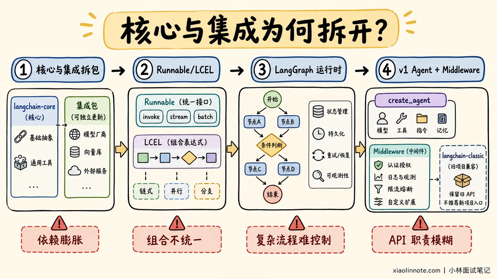
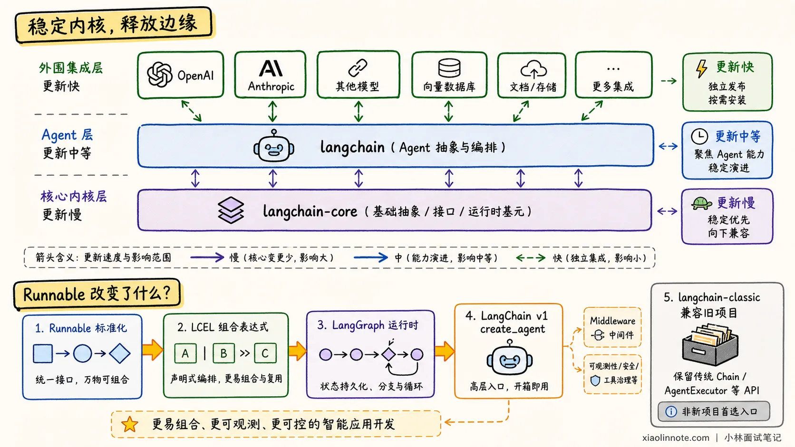
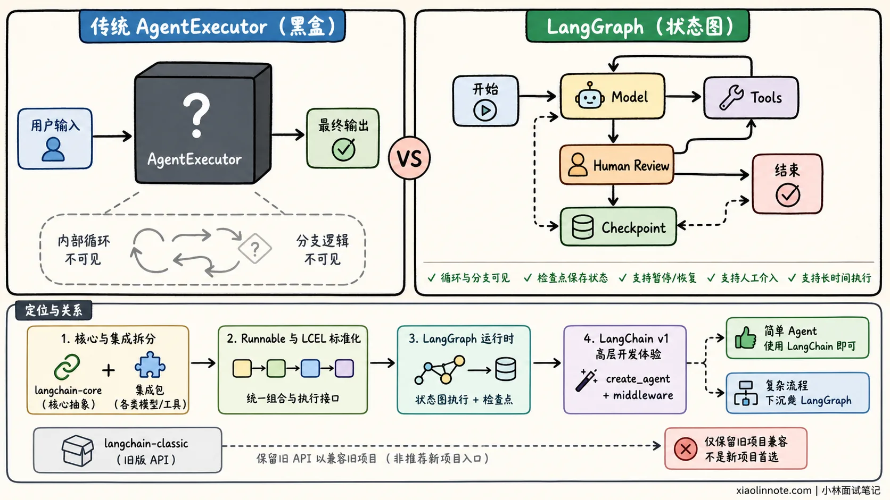
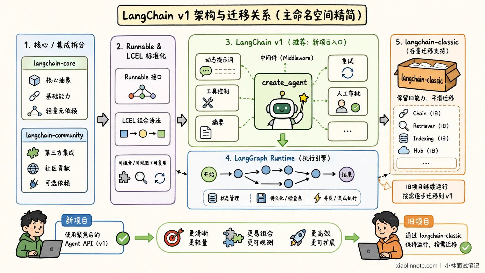

LangChain 大版本升级有哪些核心变化？
👔面试官：你说说 LangChain 大版本升级都改了什么？
🙋♂️我：主要是支持的模型和向量数据库越来越多，功能变得更丰富。
👔面试官：这些只是表面。为什么要拆分 langchain-core 和模型集成包？为什么又引入 Runnable、LangGraph 和 middleware？
🙋♂️我：因为旧 API 不好用，所以新版本把旧 Chain 全部删掉了。
👔面试官：旧能力主要被移到 langchain-classic，并不是全部删除。真正值得关注的是框架职责发生了什么变化。
🙋♂️我：那升级时只更新 langchain 主包，再把旧导入改掉就可以了。
👔面试官：还要检查 LangGraph、社区包和模型集成包的兼容关系，并回归测试工具调用、流式输出和持久化，不能把跨版本迁移理解成换几个 import。
这道题不是让你背每个小版本增加了哪些 API，而是要回答：LangChain 为什么从一个包罗万象的 LLM 工具箱，逐渐演进成「稳定核心协议、独立模型集成、高层 Agent API、LangGraph 运行时」的分层架构。
💡 简要回答
LangChain 的版本演进可以抓住四条主线。
第一是拆分核心与集成。稳定的消息、模型、Tool 和 Runnable 协议放进 langchain-core，第三方模型与向量库则迁到 langchain-community 或独立集成包，避免厂商 SDK 的变化频繁影响核心框架。
第二是使用 Runnable 和 LCEL 统一组件调用。Prompt、Model、Parser 等组件拥有一致的 invoke、batch、stream 和异步接口，确定性流程可以通过组合而不是不断继承新的 Chain 类实现。
第三是将 Agent 运行时转向 LangGraph。传统 Agent 执行器适合简单循环，却难以处理复杂状态、分支、暂停恢复和人工审批。LangGraph 将执行过程显式表示为状态图，成为 LangChain Agent 的底层运行基础。
第四是 LangChain v1 进一步聚焦 Agent。create_agent 成为高层入口，middleware 负责动态提示词、工具控制、摘要、重试和人工介入等横切能力，旧 Chain 等接口进入 langchain-classic。
这些变化的共同方向不是「增加更多类」，而是稳定核心抽象、解耦第三方集成、统一组合协议，并把复杂 Agent 交给可持久化、可恢复的图运行时。
flowchart LR
A[旧版大而全依赖] --> B[核心协议与集成拆分]
B --> C[Runnable/LCEL组合固定流程]
C --> D[LangGraph承载有状态运行时]
D --> E[v1高层 Agent + Middleware]
E --> F[迁移验证：工具、流式、持久化、幂等]这条链路表示架构关注点的迁移，不表示所有旧 API 在同一天消失；升级仍要以目标版本迁移指南、锁定依赖和回归结果为准。
📝 详细解析
为什么要不断调整架构？
LangChain 早期把模型、向量库、工具、Retriever 和大量预制 Chain 都放在相近的包结构中，快速验证想法很方便。可项目一大，第三方 SDK 的一次更新就可能牵动整个依赖树。
依赖问题只是第一层。继续往上看，不同 Chain 的调用和组合方式并不统一，开发者需要记住越来越多专用 API；再遇到复杂 Agent，执行循环又藏在执行器内部，很难插入分支、审批和恢复逻辑。功能越加越多，核心职责反而越来越模糊。
因此，大版本演进的重点并不是单纯增加功能，而是重新划分边界：哪些协议需要保持稳定，哪些集成应该独立更新，哪些流程应该由更底层的运行时管理。

核心与集成为何拆开？
模型厂商、向量数据库和外部工具的 SDK 变化很快，而消息、Runnable、Tool 等核心协议应该尽量稳定。把它们全部放在同一个包中，会让两种不同的迭代节奏互相影响。
拆分后，主要职责可以这样理解：
| 包 | 核心职责 |
|---|---|
langchain-core |
消息、模型、Tool、Runnable 等基础协议 |
langchain |
面向应用开发的高层 Agent 能力 |
langchain-community |
大量社区维护的第三方集成 |
langchain-openai 等独立包 |
跟随特定厂商 SDK 独立迭代 |
这种设计让项目只安装真正需要的集成，也降低了某个模型 SDK 升级对整个框架的影响。面试时不需要背出所有包名，重点应放在「稳定内核，释放边缘」这一架构思想。

Runnable 改变了什么？
早期 LangChain 为不同流程提供了大量 Chain 类，调用方式和扩展方式并不完全一致。Runnable 协议与 LCEL 将 Prompt、Model、Parser、Retriever 等组件统一为可组合单元。
# Prompt、Model 和 Parser 统一遵循 Runnable 协议
chain = prompt | model | output_parser
# 组合后的整体仍然使用统一的 invoke 接口
result = chain.invoke({"question": "什么是 Agent？"})
这段代码的重要之处不是管道符，而是组合后的整体仍然遵循 Runnable 协议，因此可以使用统一的同步、异步、批处理、流式和追踪接口。
它代表 LangChain 从「大量预制类」转向「少量标准协议 + 组合」。对于步骤固定的确定性流程，Runnable 和 LCEL 往往比 Agent 更容易测试和控制。
为什么转向 LangGraph？
传统 Agent 执行器通常在内部运行「模型判断、调用工具、再次判断」的循环。简单 Agent 使用方便，但一旦加入规划、反思、并行分支、人工审批或故障恢复，隐藏的循环就会变得难以修改。
LangGraph 的解决思路，是把隐藏循环摊开成 State + Node + Edge。State 保存消息和业务进度，Node 执行模型、工具或普通业务逻辑，Edge 决定结果接下来流向哪里。
这样，循环和分支不再隐藏在执行器内部，检查点还能保存运行状态，为暂停恢复、人工介入和长时间执行提供基础。

LangGraph 并不是把 LangChain 完全替换掉。LangChain 提供模型、Tool、middleware 和 create_agent 等高层开发体验，LangGraph 提供底层状态与执行能力。简单 Agent 使用 LangChain 即可，复杂流程再下沉到 LangGraph。
LangChain v1 聚焦了什么？
LangChain v1 将主线进一步收敛到 Agent 开发。要理解这次收敛，可以先从开发者最常接触的入口看起。
新项目通常从 create_agent 开始。开发者提供模型、工具和系统提示词，底层由 LangGraph 运行 Agent loop，因此这套高层入口能够继续使用持久化、流式输出和人工介入等运行能力。换句话说，易用性留在 LangChain，复杂执行能力则由 LangGraph 承接。
Agent 跑起来后，总会出现动态提示词、模型选择、工具筛选、对话摘要、重试和人工审批等需求。如果每增加一项能力都重写循环，高层入口很快又会失去意义。因此 v1 把 middleware 作为主要扩展方式，让这些横切逻辑插入关键执行阶段，而不是复制整套 Agent loop。
高层入口和扩展机制明确以后，主命名空间也能顺势精简。旧 Chain、Retriever、Indexing 和 Hub 等能力主要迁到 langchain-classic，存量项目仍可渐进迁移，新的 langchain 包则把注意力留给 Agent 主线。

因此，不能把 v1 简单理解成「旧 API 全部删除」。更准确的说法是：新项目使用聚焦后的 Agent API，旧项目通过 langchain-classic 保持运行，再根据需要逐步迁移。
Pydantic 2 值得重点背吗？
在 Python 相关版本的迁移背景中，内部数据模型曾向 Pydantic 2 迁移，并逐步收紧旧兼容路径。升级时应以项目目标版本的依赖约束和迁移指南为准，重点回归工具 Schema、结构化输出和配置对象。
不过，面试时不需要展开 Pydantic 的全部版本差异。只要说明它统一了数据模型与校验基线，旧项目升级时需要检查导入路径和模型定义即可。相比之下，拆包、Runnable、LangGraph 和 v1 Agent 架构更能体现 LangChain 的长期演进方向。
升级时要注意什么？
跨大版本升级不能只执行一次依赖更新。动手前先锁定当前依赖和可复现环境，再阅读目标版本的迁移指南，否则一旦多个包同时变化，很难判断问题从哪里开始。
接下来要顺着新的分层检查兼容关系。langchain、LangGraph 和模型集成包各自有更新节奏，确认版本组合以后，才能逐步替换废弃导入路径和内部 API。这里适合小步修改、小步运行，不要等所有代码改完才第一次启动。
代码能够启动，只说明导入问题解决了。工具调用、结构化输出、流式响应和持久化仍要分别回归，因为这些边界最容易受到协议和运行时变化影响。付款、发消息等有副作用的路径还要先在隔离环境验证幂等，再做小流量发布，避免一次升级把重复执行带进真实业务。
不同包的更新节奏并不完全一致。主包的稳定承诺不能自动覆盖社区集成、合作伙伴包和实验性 API，因此生产项目应该固定依赖版本，并尽量建立在公开稳定接口之上。
演进方向是什么？
把几次架构变化连起来，主线其实很清楚。首先用 langchain-core 稳定基础协议，再把模型和数据库集成拆出去独立更新，解决核心与外部 SDK 节奏不一致的问题。
核心边界稳定以后，Runnable 与 LCEL 统一了确定性流程的组合方式。最后，复杂状态和执行流程下沉到 LangGraph，高层再通过 create_agent 和 middleware 提供更容易使用的 Agent 入口。
这套方向让 LangChain 从「封装大量 LLM 功能」，转向「提供清晰分层的 Agent 工程体系」。代价是旧项目升级需要处理依赖和导入路径，收益则是核心接口更稳定、复杂流程更可控，也更适合生产环境。
🎯 面试总结
面试时，不需要背诵每个小版本增加了哪些 API，也不建议报当前最新补丁版本。围绕四个架构节点回答即可：
- 拆分核心与第三方集成。
- 使用 Runnable 和 LCEL 统一组件协议。
- 使用 LangGraph 承担复杂 Agent 运行时。
- v1 通过
create_agent、middleware 和langchain-classic重新聚焦 Agent。
最后再说出自己的判断：LangChain 的演进方向是稳定核心、解耦集成、组合确定性流程、图化 Agent 运行时。这样既能回答「升级了什么」，也能解释「为什么要升级」。
📚 参考资料
- LangChain 官方：v0.1 发布说明
- LangChain 官方：v0.2 稳定性升级说明
- LangChain 官方：v0.3 发布说明
- LangChain 官方：LangChain 与 LangGraph 1.0 发布说明
- LangChain Python 官方文档：v1 新能力
- LangChain Python 官方文档：v1 迁移指南
- LangChain Python 官方文档：版本策略